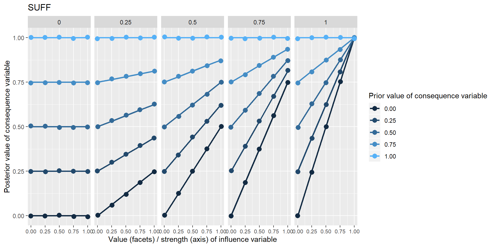
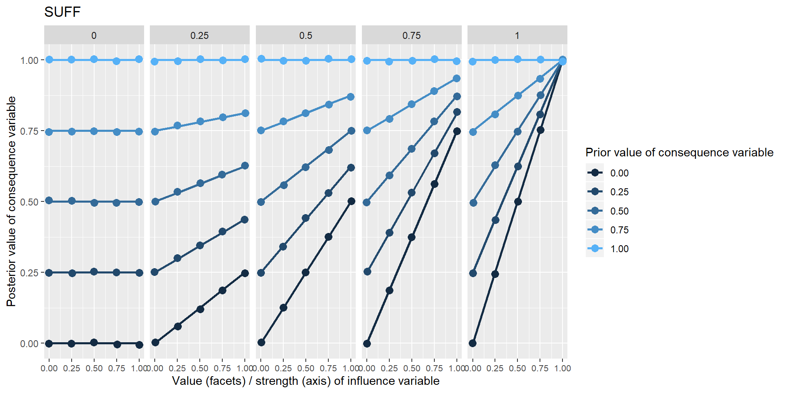
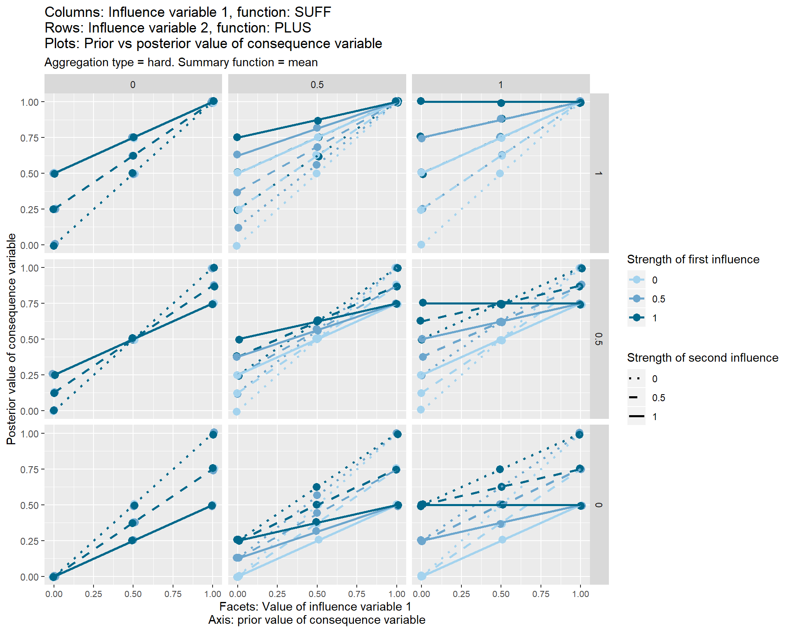

Section 36 Coding specific influences – individually and in combination
36.1 Summary of the argument so far
I argued6 that as evaluators and social scientists we are faced with a bag full of different fragments of causal information which most often will mention several different factors or variables. We need to understand how to encode and synthesise such fragments. In particular, we can use causal maps to show how the fragments link together. Causal maps (actually, directed causal networks) are great because they show how our (putative) knowledge of the world is constructed from relatively stable, portable, fallible, snap-together pieces.
I argued that we need rules to translate backwards and forwards between fragments of (written) causal information and causal maps. In the one direction, the question is how to encode causal information in the form of maps; in the other direction, the question is how to interpret those maps.
Most generally, we need rules about how to reason with causal maps (and therefore with the sets of causal fragments which they encode) – how to see if one map, e.g. a summary map, (or a summary statement) can be deduced from another. I argued that showing how to reason with causal maps is the same thing as explaining the meaning of their constituent parts and conventions. The maps which result when we encode a causal fragment in a causal map, or join up two mini-maps to make a larger one, mean something; but what are the translation rules?
I have presented some of these rules, part of what I call “Soft Arithmetic” - e.g. the basic rule for coding a single causal fragment, the rules for joining smaller maps together, etc.
Quantitative social scientists have desks covered with numbers and they have arithmetic and statistics to help them make deductions with them.
We have desks covered with causal fragments. This is primary information and cannot be reduced to measurements of the values of variables and observed correlations between them. We start at (putative) causality, the point which pre-causal, quantitative social scientists set out for but never reached. We use an arithmetic for causal fragments, which I am calling Soft Arithmetic. We use it anyway when we reason with fragments of causal evidence, so we may as well spell it out.
I argued that looking at the structure of the maps alone (what links to what) is not enough. (I think this is Rick Davies’ approach; or maybe he does indeed take note of the contents of the causal functions but makes the reasonable assumption that all the functions are simple “increasing” or “PLUS”.) Sometimes we also need to ask and answer questions about comparisons (“Is this outcome higher in this situation than in that situation, e.g. without the project?”), comparisons of comparisons (“Is the influence of this project as big as the influence of that project?”), and maybe absolute judgements of the form “This factor is high” or “This influence is large”. Such questions cannot in general be answered purely by looking at the structure (there are a few, relatively trivial exceptions. For example, we can merely count the number of mentions of a causal link, but by ignoring the contents of those causal links, e.g. “this is necessary for that”, or “this decreases that”, we cannot draw many very interesting conclusions. We only know that people said that this factor was somehow causally relevant to that factor, but we don’t know anything about how it is causally relevant, which is usually what we want to know.
I argued that the requirement to be able to make some sorts of comparisons (and especially, comparisons of comparisons) is logically equivalent to the requirement to encode the values of the variables in our maps using numbers of some sort. (Though these need not be numbers from the usual space of interval numbers like -7 and 504.34; in particular, I am interested in variables whose values vary between 0 and 1.)
You are now getting justifiably uneasy at this talk about applying numbers to causal maps and the conclusions we draw from them. But:
- we are fully aware of the fragility of most such conclusions
- we will rarely mention actual numbers, we only want to make judgements (like “B is probably larger than C”) on the basis of them
- we will be boringly insistent in frequently saying “the evidence isn’t strong enough, I’d rather not make any comparison here”
- but crucially, we are aware of our responsibility not to always refrain from judgement and make too many type-II errors; sometimes the evidence, encased as it is in many layers of fuzzy caveats, is so strong that we have to make a judgement: yes or no, high or low, and to help our clients and readers to do so too. And from a Bayesian perspective, the right question is: what’s your best bet, experts in QuIP or Outcome Harvesting or whatever, does the program work or not? Hiding behind the null hypothesis is so last-century; and it is irresponsible too.
So we also need rules about how to encode information about quantity and extent, and direction / shape of causal influence.
The rules of Soft Arithmetic are actually embedded in the app. So when you ask the app to show, for example, the effects on E of C and B, these are the rules which are being followed.
In the first part of this guide, I talked generically about the “content” of a causal link and about the function which it embodies. I then went on to look at those causal contents. I suggested that they can be understood as very general functions from an influence variable (or a package of influence variables) to a single consequence variable. This function is most often vague, ill-defined, and not obviously numerical. So a dance student who copies a teacher’s moves is embodying the function “do the same as” which maps the space of teacher-moves onto the space of student-moves. It’s quite easy to see when the student is keeping or breaking the rule, even though we’d never be able to formulate it numerically. Yet, it is still a function.
Ideally, Soft Arithmetic would help us deal with any kind of function including those which are completely non-numerical; but for the purposes of this guide (and the app) I am henceforth going to stick to “lo/hi” variables and the functions aka causal links between them. “Lo/hi” variables vary between 0 (low) and 1 (high), similar to those found for example in Fuzzy Cognitive Maps and related approaches. A large proportion of the functions which we are likely to want to code can in fact be coded using quite a small set of functions (four so far, including “necessary” and “sufficient”), leading from (packages of) lo/hi influence variables to lo/hi consequence variables.
Contrast here with Goertz and Mahoney (2006)
That’s the end of this summary of the argument so far; now I will proceed with developing the next part of Soft Arithmetic.
36.2 Encoding causal influences between lo/hi variables
How can we possibly have enough symbols to write down the different ways one or more variables can influence another? Even with variables which have rational numbers as their values and even with the strongest linear assumptions there are uncountably many such functions and combinations: exponential, interacting, chaotic, and so on.
In the most basic situation, we have information about some unspecified influence of one “influence variable” on one “consequence variable”.
The influence is hardly ever completely unspecified. We might hear things like this:
- You can’t have E without B
- Mostly, Bs are Bs
- More of B means more of E
- B happened and then E happened
- E was poor because of B
- B is good for E
- B reduces E
- B is quite good for E
- B doesn’t have much effect on E
More generally there is more than one influencing variable
- B and C combine synergistically to influence E
- B and C have contrary influences on E
- You can’t have high performance without both high effort and high ability;
and so on. Yet, we are unlikely to ever hear a neatly-specified function. How to encode this information?
Also, (a related problem): how to make sense of any kind of weight information like strength, trust, confidence, reliability, probability, class membership etc. Obviously these qualifiers do not all mean the same thing, but we will make a start by looking at how to implement even some generic version. I will show a way to reduce the influence of information which is deemed to be, for example, less reliable or trustworthy or simply expresses a weaker connection.
36.3 Breaking down the problem
What we will do is restrict and reduce the problem as follows:
All variables are lo/hi variables, taking values between 0 and 1. This also includes false/true variables as a special case, with values just 0 or 1.
For the moment, we will deal only with symmetrical or commutative functions in the sense that if \(E = f(B,C)\) then also \(E = f(C,B)\). For example, this is true for addition but not for division. [am I sure about this?? we surely want to be able to code that one variable is a supressor in a package]
We will specify a limited (as small as possible) bunch of functions to encode causal information which are designed for lo/hi variables, i.e. they are all defined on the same domain and range, so they all tell you how to go from values between 0 and 1 to produce another value between 0 and 1. These are functions such as AND, MULTIPLY, NECCESSARY etc, chosen so that in combination with the attributes “strength” and “contour”, we can code a good proportion of the functional relationships we are likely to encounter.
This also means that rather than defining a function like NECESSARY specially for the case of just binary 0/1 variables, we will straight away provide a generalisation which can also deal with intermediate values, and therefore deal with binary variables in particular, as a special case.
We will also, to keep our zoo of functions as lean and powerful as possible, we will try to provide functions (like MULTIPLY) which can be defined all at once for any number of influence variables. (Just as with ordinary arithmetic we don’t need to provide separate definitions for the “SUM” in \(SUM(b,c)\) and in \(SUM(b,c,d)\) just because there are different numbers of arguments.)
Thus armed, we will be able to tackle the thorny problem of how to combine different causal packages influencing the same variable (see earlier), making allowance for any weightings; and for the resulting causal maps, we will be able to “soft-calculate” the downstream effects of any given setting of the exogenous (“no-parent”) variables. More generally, we will be able to say things like, for example, “the effect of B on W, way downstream of it, is likely larger than the effect of C on W, especially when Z is hi”.
36.4 Some “mono functions”: functions with a single influence variable
Here are four fairly obvious “mono functions”: PLUS, MINUS, NECC and SUFF.
They are a formalisation of some really familiar ideas, which will probably seem standard and familiar in some ways but not in others (in particular, I am not aware of other similar attempts to bring necessary and sufficient conditions together with more ordinary “increasing” and “decreasing” functions together under one roof). I will explain them by means of graphs.
The first set of graphs are derived from the same simple situation in which one variable influences one other variable, as in the diagram below. I’ve called this function “PLUS” because it tries to force the consequence variable to take the very same value as the influence variable. It could also be called IDENTITY or perhaps POSITIVE or INCREASE.
This is the first such diagram in which the specification of the function is not preceded by three dots, because we are actually using a function (“PLUS”) defined within Soft Arithmetic. When coding, this corresponds to the difference between merely adding some notes about the function (information which the app cannot make use of) and using a drop-down input widget so that the app “knows” which function is meant and can use this information in subsequent calculations.
Below there is a set of graphs which show the value of G (on the y axis) given the value of the single influence variable (the five different facets or sub-graphs) and the strength from 0 to 1 of that influence, shown on the x-axis of the individual sub-graphs.
The different coloured lines are generated by different possible prior values of Y, i.e. values which it would have taken if X hadn’t been influencing it.
Only five different values are used here for the influence variable and the prior value of the consequence variable, and for the strength of the influence, but any arbitrary number of values between 0 and 1 is valid.
So in the right-hand column of each facet, where strength=1, we claim that the training completely determines the quality of the farming – a very unlikely situation; i.e. the “strength” of the function is set to 1. The function PLUS says that in these positions, the influence variable completely determines the consequence variable in the simplest sense that it is forced to have the same value as the influence variable. All the coloured points are overlaid on top of one another (they are slightly “jittered” randomly to make this overlaying visible) because the prior value of the consequence variable has no influence on its posterior value, and there are no other influences. So in the right-and facet, when strength is 1, the posterior value of the consequence variable is 1. In the left-hand facet, when the strength is 1, the posterior value of the consequence variable is 0 because the influence variable is 0. On the other hand, when the strength of the influence is zero, in all five facets the value of the consequence variable is not affected.

The next example is the same idea, but the influence variable forces the consequence variable to take the opposite value.

The next two examples are much more interesting: continuous versions of necessary and sufficient conditions. The characteristic upper and lower triangles familiar from empirical presentations of these conditions Goertz(xx) are visible - for NECC, where the influence variable is 0 and for SUFF where it is 1. When the strength is less than 1, the influence variable does not completely determine the consequence variable. When it does not, the information about what value the consequence variable should nevertheless take does not come from arbitrary noise but from the prior value of the consequence variable. The influence variable serves to restrict the range of operation of this prior information.
 

Where does this prior value come from? Hopefully we do have some prior information, or at least a probability distribution. In the simplest case, nowhere. If we have no information, we can simply provide a “flat prior”, i.e. a distribution in which each level has the same probability. The app can cope with a discontinuous probability distribution with up to five levels, but doing Soft Arithmetic with many exogenous variables with unknown levels is computationally expensive. If there are three of them, there are \(5^3\) sets of calculations to do.
“Wait” you say: “what is the difference here between the influence variable having a value of .5 and the influence itself having a strength of .5”? Imagine we knew that a substantial income is necessary for admission to a particular profession. You just can’t enter it without that income – but in particular cases, someone’s income is not so high. So the value of the variable is middling, although the strength of the influence is 1. Alternatively, we might suspect that a substantial income is kinda necessary for admission, but the extent to which it is really necessary is in doubt. We could say the strength of the relationship is only middling, even for people with top incomes. (FCMs have a lot of cases like this.)
We could also include functions which change the contour of the incoming variables, such as squaring. But not now.
36.5 Some “multi functions”: functions for packages with more than one influencing variable:
These kinds of ideas can be generalised to packages of multiple influence variables. The most obvious functions are these:
- MIN
- MAX
- MULTIPLY
MIN and MULTIPLY are continuous analogues of Boolean AND. The diagram above suggests that crop quality is only as good as the weakest of the three influence variables. So if rainfall is poor, there is no point trying to improve soil or increase training. MULTIPLY embodies the same idea but is more aggressive.
It could also useful to have measures of central tendency and dispersion, like
- MEAN
- STANDARD_DEVIATION
.. which can be defined identically to their interval-scale counterparts.
It is important to note that all these functions are applied to a package (even if the package contains only one variable) at once; they are a property of the whole package, not the individual variables. For this reason it is a bit misleading to display the information on the arrows.
36.5.1 SOFTADD
One additional multi-function is called SOFTADD. I think this may be the most frequent case. It fills a gap for an incremental, addition-like function for lo/hi variables. Every additional positive parameter to the function potentially adds at least something to the result. So if someone says just “the training helps increase crop yield, but so does the pre-existing skill level and of course the weather”, SOFTADD is the best option. If any of these influence variables have values equal to 1, the consequence variable will also be 1, but if they are all below 1, the consequence variable will never reach 1, but will get ever closer to it.
Suppose:
- T, Amount of training = 0.3
- R, Amount of rainfall = 0.4
- S, Quality of soil = .5
- C, Quality of crops = SOFTADD(T, R, S)
SOFTADD is calculated by taking one of the parameters, then adding to it the second parameter * the gap between the current total and 1, and so on until all the parameters are exhausted. Perhaps surprisingly it is commutative, the order doesn’t matter. So in the example,
C = .3 +
(1-.3)*.4 +
(1-(.3 + (1-.3)*.4))*.5
[Also, we could add asymmetric functions.]
36.6 “Package-free” combinations
Now life starts to get interesting. What happens if we combine two separate “package-free” pieces of information about the same consequence variable which do not come from the same source and where we have no information about how to combine them? This is a really common situation which happens hundreds of times say in a QuIP study.
These could involve the same or different functions.
I already set out why I think this is an extremely tricky problem.
Let’s go back to contrast it with this subtly but importantly different case, when we get the information about the influence of C and T together, as part of the same explicit causal package, presumably from the same source at the same time. Someone tells us “Ah, the quality of the farming depends on both the training and the support: it is only as good as the weaker of the two”. Here the source has explicitly combined the information into a package. To make that clearer, I’ve added a box below, though I won’t do this every time we have a causal package.
Except with the special strong assumptions of interval-valued variables under linear combinations, there is probably no default way to just jam together several different such causal fragments which are not part of the same package. For example because a function like “NECC” arguably has an opinion about how it should be combined with other functions, which is maybe different from the opinion which a function like PLUS has about how it should be combined.
If we do have information, from the context, about how different influences are to be combined, with some explicit function, we should explicitly join together all the influences on each variable as an explicit package with that explicit function. the problem I am focusing on here is “package-free” combinations for which we do not have any such information.
Finally, it is perfectly possible to have a causal package jammed together with another package which consists of a single influence. Here we have information about how to combine C and T but not about how to combine the influence of that package with the influence of R.
In the rest of this section, below, I make a stab at a generic way to combine any two or more such (packages of) influence variables when we have no information about how to combine them.
The jamming together of these different causal influences happens via an R procedure which basically takes the weighted average of the different influences on the consequence variable. (It takes the value which the consequence variable would have under the influence each causal package, then calculates the difference between the prior value and this posterior value. This set of differences, one for each causal package, is then multiplied by the strength of each influence; so if the strength is 0, the resulting difference is zero. Finally, their arithmetical mean is taken and this is added to the original prior value of the consequence variable.) This is really easy maths, but the ramifications can be quite confusing.
It’s also worth noting that this weighted average also works well with any kind of numerical variables, not just lo/hi variables.
This “package-free” aggregation function is shown in the set of graphs below.
Each of the nine individual plots show how the posterior, i.e. final, value of the consequence variable on the y axis varies according its prior value, i.e. the value which it would have taken before these two influence variables touched it.
The three different vertical sets of facets or sub-graphs show the three values of the first influence variable and the three different horizontal sets of facets or sub-graphs show the value of a second influence variable.
The strength from 0 to 1 of the first influence variable is shown by the colour of the lines. The strength from 0 to 1 of the second influence variable is shown by the line type.
The graphs also show some additional options (typeand summary function) which I have not yet discussed.

In these graphs it is helpful to look straight for the dark-blue, unbroken line; this is the line where both influences have a strength of 1. So in this first diagram, this line is always horizontal, which means the consequence variable is fixed to a specific value depending on the facet, i.e. depending on (the mean of) the values of the influence variables. This first diagram is in a way the most problematic, because it highlights the weakness of the “weighted mean” approach: if two forces are acting in the same direction on the consequence variable, we would probably expect it to be affected by their sum, not their mean. See xx.





When both conditions are necessary, and both take a value of 1 (top-right facet), they have strictly no influence on the consequence variable, and all the lines are y=x lines, i.e. the consequence variable just retains its previous value.


36.7 Contradictions?
In general, it is not coherent for the same source to claim different functional influences from the same or different sets of influence variables onto the same consequence variable. This might be surprising. But for example let’s think what it would mean if someone claimed simultaneously a necessary and a sufficient condition on the same thing.
..… they couldn’t, could they? If the beans are sufficient, you don’t need to know anything about the training, so it can’t be necessary. If the training is necessary, the beans can’t be sufficient (because if there was no training, the beans wouldn’t be enough).
This case is shown in one of the graphs above; the result is that the two influence variables transmit no effect to the consequence variable, which remains at its prior value.
So we expect sources to organise their information into packages, and if they don’t, we’ll do it for them.
36.8 Building up more functions from these building blocks
As we piece together fragments of causal information into a larger network, following these causal rules (or getting the app to do that for us), we will see how downstream variables are in principle influenced by the values of the upstream variables. But we can also “virtually” piece together more complicated functions, if we need them, by using conceptual links rather than causal links. For example, here we define a conceptual or latent variable “Job suitability” – note the dotted lines – as the minimum of emotional intelligence and work experience; and we show how this inversely affects the level of conflict in the workplace. By “zooming out” we can see that J = MINUS(MIN(E,W)); we have constructed a more sophisticated function by piecing together two from our handful of basic functions.
36.9 Coding influences within in the app
The app already realises the coded networks as actual R objects, within which the variables or nodes have an attribute called level e.g. 0 or 1, but they can take other values too. Also there is an attribute called fun which stores the function which the variable uses to calculate its own level on the basis of the levels of the variables directly upstream of it. (As there might be more than one package of influence variables, the fun attribute is stored with each such package.)
Our job when coding the causal link is to specify this function using the drop-down widgets etc in the app’s UI (and if there is more than one combination of influencing variables, to code one function for each set). We should also code the level of the variable, if we know it.
In general, the variables are typeless so you can give any variable a level of 1, or -2090, or “fish” or anything you want, and the function attached to the variable(s) directly downstream of it can maybe make sense of that, or maybe not. The function can be the name of any R function, including those mentioned here. But the philosophy of the app is focused on lo/hi variables.
There aren’t any references to literature in this summary, but there are some in the preceding sections↩